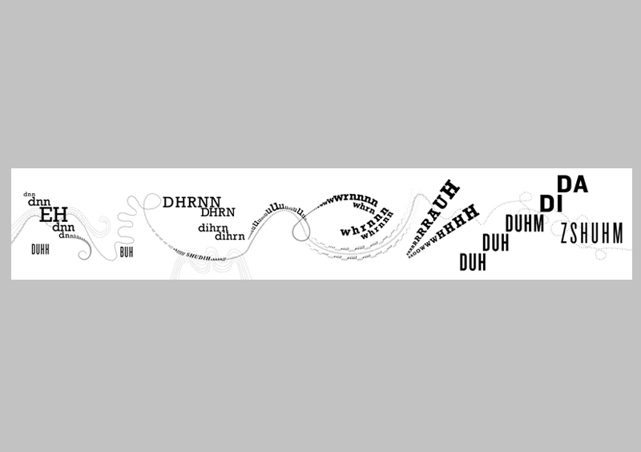
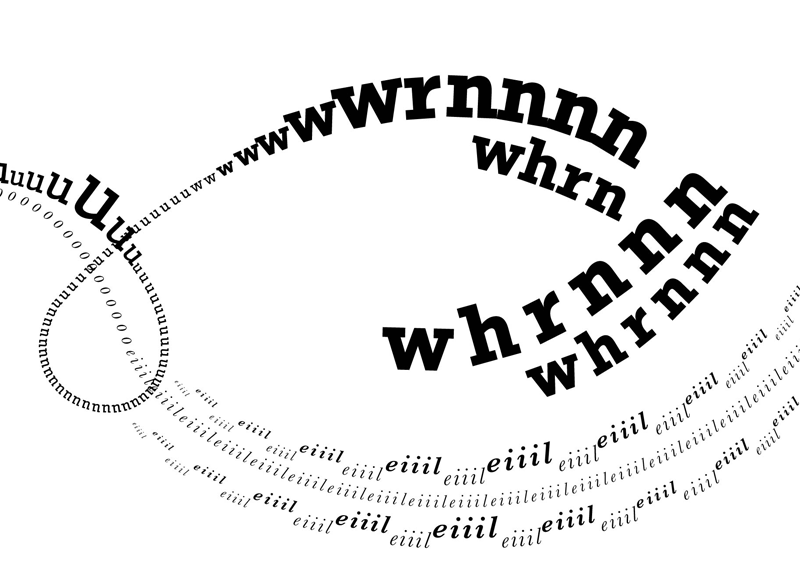
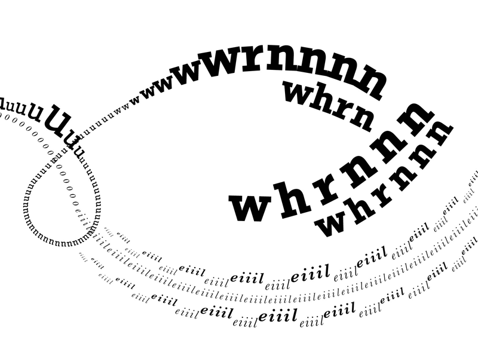
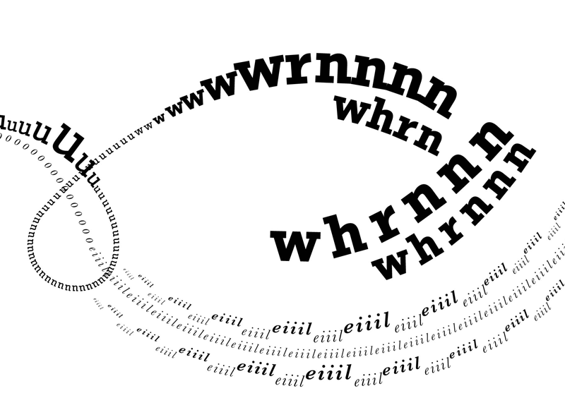

 


Onomatopoeia
This was a two-part project in which I took a 17-second clip of of Leopold Stokowski & the Philadelphia Orchestra's "A Night on Bald Mountain" and expressed it typographically through print and through video. Both pieces were designed to visualize musical structures like pitch, rhythm, tempo, and volume, as well as the spirit of the song. The print was designed in Adobe Illustrator; it's dimensions are 33.5"x6"; printed on matte paper. This video was my first experience using Adobe AfterEffects.